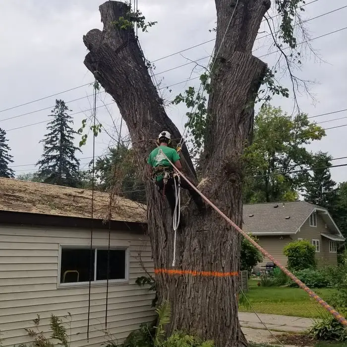

Tree Removal
Safe removal of dead, leaning or unwanted trees, including tight spots next to houses, fences and power lines.
Tree removal in Blaine →Local, insured tree crew serving homeowners across Blaine. Dead ash trees, storm damage, overgrown yards and leftover stumps. Free quotes, clean job sites.
Safe removal of dead, leaning or unwanted trees, including tight spots next to houses, fences and power lines.
Tree removal in Blaine →We grind stumps below grade so you can reseed, sod or plant. Chips raked out or left as mulch.
Stump grinding in Blaine →Pruning, deadwood removal and clearance over roofs, driveways and lawns to keep trees healthy and safe.
Tree trimming in Blaine →Dead and dying ash trees taken down before they turn brittle and start dropping limbs.
EAB ash removal →For big trees over houses, pools or garages where there's no room to drop pieces safely.
Crane removal in Blaine →Tree on the house or blocking the driveway? Call now and we'll get a crew out fast.
(651) 800-1205We remove trees in Blaine every week, from small front-yard ornamentals to 70-foot cottonwoods on back lot lines, so we know the yards, the boulevard rules and the trees that grow here.
We look at the tree, the drop zone and the access, then give you a free written quote with no obligation. The price we quote is the price you pay.
We carry insurance for the work we do and are happy to show proof before the job starts.
Mats protect your lawn and driveway, branches go through the chipper, and the wood is hauled away or left as firewood if you want it.
Read more about tree removal in Blaine, including the signs a tree should come down and when you need a permit.





Infested ash trees die quickly and turn brittle. Removing them early is safer and usually cheaper. More on EAB.
Oaks should be cut in winter, not spring and early summer, to avoid spreading this disease to neighboring trees.
Summer storms and heavy ice split limbs and topple trees. Hanging branches need fast, careful removal.
Frozen ground means less lawn damage. Winter is a great time to book removals. Winter removal guide.
We work across Blaine, from the newer neighborhoods around The Lakes and TPC Twin Cities to the established streets west of Highway 65. Not sure if you're in our area? Give us a call.
It depends on the tree's height, trunk size, how close it is to your house or lines, and access. We come out, look at the tree and give you a free written quote with no obligation. See our tree removal cost guide for what drives the price.
Most trees on private residential property do not need a permit, but rules can differ for boulevard trees and certain lots. We check before we start.
Yes. Frozen ground protects your lawn from equipment, and winter is the recommended time to cut oaks in Minnesota to help prevent oak wilt.
Yes. Ash trees killed by emerald ash borer get brittle fast. We remove them safely before they drop limbs or fall.